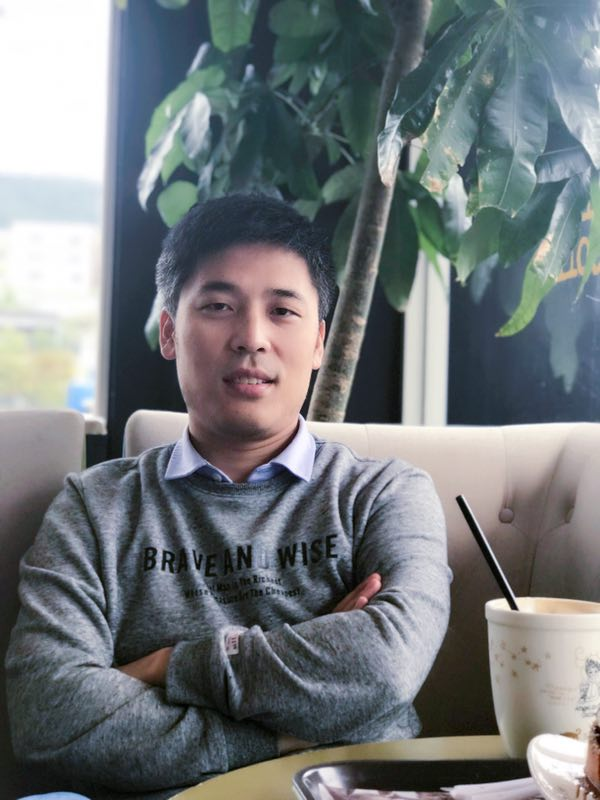

Professor · Marie Curie Fellow
School of Artificial Intelligence and Computer Science
Xi'an, China
A short story of who I am and what I work on.
Dr. Fei Hao is currently a Full Professor with the Shaanxi Normal University, Xi'an, China. He received the Ph.D. degree in Computer Science and Engineering from Soonchunhyang University, Asan, South Korea, in 2016. From 2020 to 2022, he was a Marie Curie Fellow with the University of Exeter, Exeter, United Kingdom.
His research interests include Social Computing, Concept-cognitive Learning, Soft Computing, Big Data Analytics, Edge Intelligence, and Intelligent Education. Dr. Hao holds a world-class research track record of publication in the top international journals and the prestigious conferences. He has published more than 200 papers in the leading international journals and conference proceedings, such as IEEE Transactions on Parallel and Distributed Systems, IEEE Transactions on Services Computing, IEEE Transactions on Network Science and Engineering, IEEE Communications Magazine, IEEE Internet Computing, ACM Transactions on Multimedia Computing, Communications and Applications as well as SIGIR, WWW, WSDM, GlobeCom.
In addition, he was the recipient of 8 Best Paper Awards from BDAI 2026, CIT 2024, CSA 2020, CUTE 2016, UCAWSN 2015, MUE 2015, IEEE GreenCom 2013 and KISM 2012 conferences, respectively. He was also the recipient of the Outstanding Service Award at FutureTech 2019, DSS 2018, and SmartData 2017, the IEEE Outstanding Leadership Award at IEEE CPSCom 2013 and the 2015 Chinese Government Award for Outstanding Self-Financed Students Abroad. He serves as an associate editor in Human-centric Computing and Information Sciences, ICT Express, Advances in Data Science and Adaptive Analysis, and Journal of Information Processing Systems. He is also a member of ACM, CCF and KIPS.
I am looking for motivated students with solid background in mathematics and programming. If you are interested in doing research with me, please feel free to contact me via email. Here is the List of Readings » for your reference.
Recent highlights, awards, and activities.
200+ papers in top-tier venues. Filter by type, or expand to see more.
Funded by NSFC, national and provincial programs.
Best paper awards and recognitions.
The people who make the lab lively.
Keynotes, invited talks, and tutorials at major venues.
Editorial and reviewing responsibilities.
For collaborations, admissions, or just a chat.